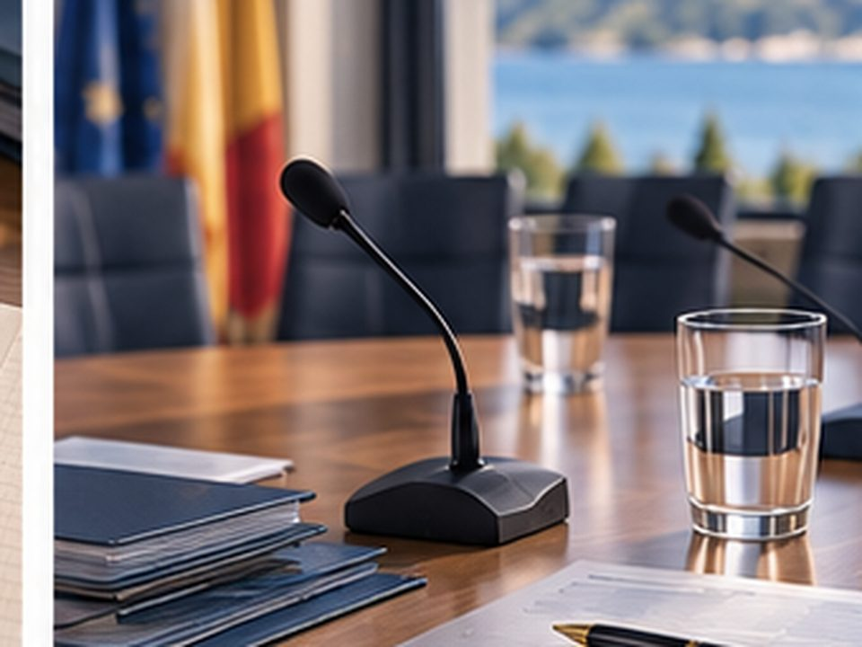

Comprendre et piloter le budget · 5 missions
Le dossier budgétaire vient d’arriver.
Vous avez 12 jours pour préparer votre lecture avant la première réunion d’examen. Le parcours vous accompagne de la prise de repères jusqu’aux questions à poser en commission.
Objectifs de formation
- Vous repérer dans les rôles, le cycle et les documents du budget de la Nouvelle-Calédonie.
- Lire les grands équilibres et comprendre les principaux indicateurs sans les transformer en verdicts automatiques.
- Identifier ce qui mérite d’être instruit et préparer des questions utiles pour la commission.
Durée prévisionnelle : environ 75 minutes.
Parcours complet, activités et approfondissements inclus.
Votre espace d'entraînement
Vos saisies utiles sont enregistrées dans votre tentative afin de permettre une reprise fidèle du parcours. Vous pouvez revenir en arrière sans perdre ce qui a déjà été validé ou saisi.
La plateforme enregistre aussi la progression, la complétion, les auto-positionnements et, pour les évaluations suivies, les résultats question par question. Ces informations sont accessibles aux personnels IFAP habilités pour le pilotage pédagogique. Aucun score global ni classement individuel n'est produit.
Positionnement
À quel niveau vous situez-vous aujourd’hui ?
Six compétences, une à la fois. Il n’y a ni bonne ni mauvaise réponse : choisissez le niveau qui correspond le mieux à votre aisance actuelle.
Votre photographie de départ
Ce radar n’est pas une note. Il représente simplement votre perception actuelle sur les six dimensions.
Votre mission : maîtriser les repères
Avant de parcourir les chiffres, vous avez besoin d’une carte mentale solide : qui intervient, quand, avec quels documents et selon quelles règles.
Pourquoi cette étape compte
Avant de parcourir les chiffres, vous avez besoin d’une carte mentale solide : qui intervient, quand, avec quels documents et selon quelles règles.
Quatre repères pour lire le dossier avec méthode
Choisissez chaque repère. Le visuel change sans dupliquer le titre : l’objectif est de retenir l’essentiel avant d’entrer dans le dossier.
Qui intervient dans le cycle budgétaire ?
Sélectionnez un acteur : ses étapes s’éclairent dans le cycle. Le détail explique ce qu’il apporte au processus au lieu de répéter simplement son nom.
Choisissez un acteur
Les étapes correspondantes seront mises en évidence ici.
Distinguer une règle d’une pratique
Un dossier peut contenir des habitudes de travail, des calendriers indicatifs ou des formulations qui ressemblent à des obligations. Avant de conclure, identifiez ce qui doit être relié à une règle et ce qui doit être vérifié.
Une règle
Exemple : le projet de budget doit être communiqué suffisamment tôt pour respecter le délai légal avant son examen.
Votre réflexe : retrouver le texte applicable et sa version en vigueur.
Une pratique
Exemple : une organisation interne ou une date habituelle de commission peut évoluer.
Votre réflexe : vérifier la pratique auprès des ressources et services à jour.
Le cycle en un coup d’œil
Commencez par explorer la chronologie. Puis passez en mode activité pour reconstituer les étapes : l’exploration et l’exercice ont volontairement deux fonctions différentes.
Quelles sont vos trois premières actions ?
Vous n’avez pas besoin de tout faire à la fois. Choisissez trois actions qui structurent votre première lecture du dossier.
Mission 1 accomplie
Vous avez construit votre carte mentale du budget avant d’entrer dans les chiffres. Votre plan de préparation rejoint maintenant votre carnet.
Badge · Maîtriser les repères
Acteurs, cycle, règle/pratique et plan de préparation sont désormais vos premiers repères.
Votre mission : analyser le dossier
Votre dossier est volumineux. L’enjeu n’est pas de tout lire dans l’ordre, mais de savoir quelle pièce ouvrir et quels signaux épingler.
Pourquoi cette étape compte
Votre dossier est volumineux. L’enjeu n’est pas de tout lire dans l’ordre, mais de savoir quelle pièce ouvrir et quels signaux épingler.
Quel document pour quelle question ?
Quatre besoins, deux documents proposés à chaque fois. Le besoin est le point de départ : choisissez le document qui vous aidera réellement à y répondre.
Trois logiques budgétaires à ne pas confondre
Avant de chercher un chiffre, repérez la logique financière concernée : budget propre, répartition ou reversement ne répondent pas aux mêmes questions.
Budget propre
Il finance directement les politiques, services et opérations relevant de la Nouvelle-Calédonie.
Question : quel est l’effet sur les moyens disponibles pour l’action propre ?Budget de répartition
Il retrace les recettes réparties entre la Nouvelle-Calédonie, les provinces et les communes selon les règles applicables.
Question : comment la recette est-elle distribuée ?Budget de reversement
Il retrace les recettes affectées qui sont encaissées puis reversées au bénéficiaire prévu.
Question : qui est le bénéficiaire de la recette ?Prévoir, ajuster, constater, orienter
Un même sujet peut réapparaître à plusieurs moments du cycle. Avant d’analyser un document, demandez-vous ce que l’on cherche à faire à ce moment-là.
Prévoir
Poser les autorisations et prévisions de l’exercice.
Ajuster
Modifier les autorisations en cours d’exercice.
Constater
Lire l’exécution réelle et les écarts.
Orienter
Débattre des choix et engagements envisagés.
Le dossier vient d’arriver
Vous allez explorer quatre pièces. Dans chacune, identifiez trois signaux qui méritent d’être épinglés. Vous devez analyser correctement les quatre pièces pour débloquer votre carnet.
Mission 2 accomplie
Vous avez parcouru les quatre pièces et identifié les signaux qui structurent la suite de l’analyse. Le carnet devient votre fil rouge.
Badge · Analyser le dossier
Vous savez maintenant partir d’une question, ouvrir la bonne pièce et épingler les signaux à instruire.
Votre mission : lire les équilibres
Vous avez identifié des signaux. Il faut maintenant vérifier les calculs, relier fonctionnement et investissement et transformer les chiffres en constats factuels.
Pourquoi cette étape compte
Vous avez identifié des signaux. Il faut maintenant vérifier les calculs, relier fonctionnement et investissement et transformer les chiffres en constats factuels.
Deux sections, une lecture reliée
Le fonctionnement et l’investissement ne se lisent pas séparément : la marge dégagée en fonctionnement contribue à financer les investissements.
Fonctionnement
Recettes et dépenses nécessaires au fonctionnement courant.
Épargne
La marge dégagée après les dépenses de fonctionnement.
Investissement
Dépenses d’équipement et ressources qui les financent.
Du fonctionnement à la marge disponible
Voici les données du cas. Elles ne sont pas à saisir : vous allez les mobiliser pas à pas pour comprendre comment se construisent les trois niveaux d’épargne.
Épargne de gestion
Elle mesure la marge dégagée avant la charge des intérêts.
Un résultat n’est pas une conclusion
Vous avez calculé les marges. Avant d’en tirer une conclusion, replacez-les dans la trajectoire et recherchez ce qui peut expliquer les évolutions.
14 Md
Épargne nette
8 Md
Épargne nette · dépense exceptionnelle de 6 Md
5 Md
Épargne nette
Quels trois constats faut-il emporter ?
Un constat décrit ce que le dossier permet d’établir. Il ne doit pas transformer trop vite une observation en conclusion.
Avant de conclure, suivez quatre étapes
Ce réflexe résume la méthode de lecture que vous pourrez réutiliser sur d’autres dossiers budgétaires.
Mission 3 accomplie
Vous avez transformé les chiffres en constats factuels et construit une méthode de lecture avant toute interprétation.
Badge · Lire les équilibres
Calcul, trajectoire, constats et réflexe sont réunis dans votre carnet.
Votre mission : interpréter et instruire
Un indicateur attire votre attention. Votre rôle n’est pas d’en tirer un verdict instantané, mais de le replacer dans une trajectoire et de tester des hypothèses.
Pourquoi cette étape compte
Un indicateur attire votre attention. Votre rôle n’est pas d’en tirer un verdict instantané, mais de le replacer dans une trajectoire et de tester des hypothèses.
Quatre indicateurs, quatre questions
Une face pour comprendre l’indicateur, une face pour savoir comment l’utiliser. Les formules restent visibles : on ne perd pas la matière technique.
Épargne brute
Dans le cas : 25 − 12 = 13
Épargne brute
Regardez son niveau et surtout sa trajectoire. Une diminution persistante appelle des questions sur les recettes et les charges.
Ces repères ne remplacent jamais l’analyse du contexte et de la trajectoire.
Besoin à financer hors épargne
Dans le cas : 22 − 13 = 9
Besoin à financer hors épargne
Il montre la part de l’investissement qui reste à financer par d’autres ressources. Demandez quelles ressources sont mobilisées et avec quel degré de sécurité.
Ces repères ne remplacent jamais l’analyse du contexte et de la trajectoire.
Capacité de désendettement
Dans le cas : 95 ÷ 13 ≈ 7,3
Capacité de désendettement
Ne lisez pas le nombre d’années isolément. Comparez la trajectoire : 3,4 → 5,5 → 7,3 ans dans le dossier.
Ces repères ne remplacent jamais l’analyse du contexte et de la trajectoire.
Taux d’autofinancement
Dans le cas : 13 ÷ 22 ≈ 59 %
Taux d’autofinancement
Il renseigne sur la part des investissements couverte par l’épargne dans ce cas. Reliez-le au besoin de financement et à la trajectoire.
Ces repères ne remplacent jamais l’analyse du contexte et de la trajectoire.
Le niveau compte. La trajectoire donne le sens.
Le dossier montre plusieurs évolutions en parallèle. Votre travail consiste à distinguer les hypothèses qui méritent réellement d’être instruites.
Comparez deux scénarios
Le montant total des investissements de l’année reste fixé à 22 Md F CFP. Faites varier deux hypothèses du cas, conservez deux configurations et comparez ce qu’elles vous conduisent à vérifier.
Lecture du scénario
Scénario central de référence : utilisez les résultats pour formuler une question, pas pour classer une décision politique.
Question de contrôle
Lorsque l’hypothèse de recettes change, quel réflexe est le plus utile avant d’interpréter le résultat ?
Quels deux points devez-vous encore instruire ?
Vous avez observé, calculé et simulé. Choisissez maintenant deux vigilances qui justifient une demande d’information complémentaire.
Mission 4 accomplie
Vous savez désormais passer d’un indicateur à une hypothèse à instruire, puis comparer des scénarios sans transformer le tableau de bord en verdict.
Badge · Interpréter et instruire
Vos points de vigilance rejoignent votre carnet pour préparer la commission.
Votre mission : préparer la commission
Vous ne pourrez pas tout approfondir. Il faut prioriser, identifier le bon interlocuteur et transformer vos constats en questions exploitables.
Pourquoi cette étape compte
Vous ne pourrez pas tout approfondir. Il faut prioriser, identifier le bon interlocuteur et transformer vos constats en questions exploitables.

S’il ne fallait retenir que 3 priorités à présenter en commission
Votre carnet contient déjà les signaux, constats et vigilances. Il faut maintenant faire un choix : quels sujets justifient le plus une demande d’explication ?
À qui demander quoi ?
Une bonne question ne suffit pas : elle doit être adressée à l’interlocuteur capable de fournir l’information ou d’en expliquer l’hypothèse.
Service financier compétent
Hypothèses techniques, construction des données, méthode de calcul, éléments du dossier.
Commission compétente
Lieu d’examen et de mise en discussion des éléments nécessaires à la décision.
Organisme de contrôle
Références de contrôle, analyses ou constats relevant de sa mission.
Une question qui permet d’instruire la décision
Construisez deux questions à partir de quatre briques : le signal observé, l’enjeu ou la conséquence, l’information attendue et l’interlocuteur.
Aperçu de la question
Complétez les quatre briques pour générer votre formulation.
Obtenez les informations nécessaires
Vous échangez avec le service support. Votre objectif n’est pas d’obtenir une note, mais d’améliorer progressivement la précision de l’information et l’avancement de votre instruction.
Votre carnet de mission
Au fil des cinq missions, vous avez collecté des repères, des constats, des vigilances, des priorités et des questions. Retrouvez-les ici dans une seule trace de préparation.
Mission 5 accomplie
Votre préparation est prête : trois priorités, deux questions, un échange mené et un carnet que vous pouvez reprendre avant la séance.
Badge · Préparer la commission
Vous avez achevé les cinq missions du parcours.
Positionnement
À quel niveau vous situez-vous maintenant ?
Les mêmes six compétences qu’au départ. Répondez pour aujourd’hui ; votre radar comparera les deux photographies.
Votre évolution perçue
La comparaison ne produit ni score global ni classement. Elle vous permet de visualiser votre évolution sur les six compétences.
Et avec le recul ?
Pourquoi cette seconde question
Au début du module, vous ne disposiez pas encore des repères qui permettent de s'évaluer. Beaucoup découvrent, en avançant, l'étendue de ce qu'ils ignoraient — et se noteraient aujourd'hui plus bas qu'au départ, alors qu'ils ont progressé.
Alors, avec le recul : où en étiez-vous vraiment avant de commencer ?
Module terminé
Vous avez préparé votre lecture budgétaire
Ce qu'il reste à emporter, et le chemin parcouru.
Le chemin parcouru
Comparaison entre votre regard rétrospectif sur votre niveau de départ et votre position d'aujourd'hui.
Vos auto-positionnements sont accessibles aux personnels IFAP habilités. Leur éventuelle communication à d'autres destinataires relève des règles de gouvernance arrêtées pour le dispositif.
Votre dossier est prêt à être repris en séance
Le carnet qui était vide au départ rassemble désormais vos signaux, constats, vigilances, priorités et questions. Il devient votre trace de préparation pour la suite du mandat.
Votre chemin parcouru
Vos 5 badges
Vous pouvez le rouvrir depuis « Mon carnet », le relire avant une séance et l’imprimer en PDF.
Votre progression
L'attestation « Élu engagé en Nouvelle-Calédonie » est délivrée à l'issue du parcours. Elle atteste de votre engagement, pas d'un score : aucune note n'y figure.
Recommencer le module
Cette action efface vos réponses et votre progression enregistrée, puis relance le module depuis le début.
Vos repères pour poursuivre
Retrouvez les outils de performance du module et les références de travail utiles. Retrouvez ici les références de travail retenues pour ce module et les ressources utiles pour poursuivre votre lecture.
Outils du module
Un aide-mémoire pour préparer l’examen du dossier.
Tableau de bord pour structurer la lecture des données utiles.
Accessible également à tout moment depuis le menu « Accès direct ».
Vos signaux, constats, vigilances, priorités et questions.
Références de travail
Cadre institutionnel et budgétaire de la Nouvelle-Calédonie ; utiliser la version en vigueur.
Documents et délibérations budgétaires publiés par l’institution.
Rapports et documents budgétaires de la Nouvelle-Calédonie.
Références et ouvrages
Les références bibliographiques complémentaires seront reprises lorsqu’elles auront été explicitement fournies ou validées. Aucun ouvrage n’est ajouté de notre propre initiative dans cette version.
Conception et contributions
Cette page distingue clairement l’expertise du contenu et la conception pédagogique du module.
Expertise contenu
Émilie Olivier — Bee Assist
Contribution au corpus expert, aux cas, données fictives calibrées, repères et feedbacks soumis à la revue pédagogique.
Ingénierie et production
IFAP — Institut de Formation à l’Administration Publique
Ingénierie pédagogique, scénarisation, UX, médiatisation et intégration du module.
À propos des données
Les données du cas sont fictives et utilisées à des fins pédagogiques. Les références réglementaires doivent être relues dans leur version en vigueur avant publication finale.
Mes repères
Cette carte montre les missions franchies, les badges acquis et ce qu’il vous reste à construire. Elle reste accessible pendant tout le parcours.
Maîtriser les repères
- 4 repères fondamentaux
- Acteurs et responsabilités
- Cycle budgétaire
- Plan de préparation
Analyser le dossier
- Document adapté au besoin
- Trois logiques budgétaires
- Prévoir / ajuster / constater / orienter
- Analyse des 4 pièces
Lire les équilibres
- Fonctionnement et investissement
- Trois niveaux d’épargne
- Lecture de trajectoire
- Réflexe d’analyse
Interpréter et instruire
- Quatre indicateurs
- Hypothèses à instruire
- Comparaison de scénarios
- Deux vigilances
Préparer la commission
- Trois priorités
- Bon interlocuteur
- Deux questions
- Échange formatif
Mon carnet de mission
Le carnet se remplit au fil du parcours. Il est vide au départ puis rassemble uniquement les traces que vous avez effectivement produites.
Lexique budgétaire
Retrouvez les principaux termes utilisés dans le module, avec les formules lorsqu’elles sont utiles.
Document qui fixe les prévisions et autorisations budgétaires de l’exercice à venir.
Décision budgétaire prise en cours d’exercice pour modifier les autorisations budgétaires.
Document présenté par le Gouvernement retraçant l’exécution ; le vote arrêtant les comptes intervient selon les délais applicables.
Débat du Congrès dans les deux mois précédant l’examen du budget primitif, portant sur les orientations et engagements pluriannuels envisagés.
Recettes de fonctionnement − dépenses de fonctionnement hors intérêts.
Épargne de gestion − intérêts de la dette.
Épargne brute − remboursement du capital de la dette.
Encours de dette ÷ épargne brute ; elle s’exprime en années et se lit dans son contexte et sa trajectoire.
Capacité à financer une partie des investissements grâce à l’épargne dégagée en fonctionnement.
Dépenses engagées ou recettes certaines qui restent à réaliser après la clôture de l’exercice, selon les règles applicables.
Évaluation finale
Titre de l'évaluation
Ce qui se passe ici
Vous recevez votre résultat immédiatement, avec l'explication. Pour chaque question, la plateforme enregistre si votre réponse était juste ou non — au même titre que votre auto-positionnement, ces réponses sont accessibles aux personnels IFAP habilités. Elles ne servent qu'à calculer, pour l'ensemble des élus et question par question, le taux de réussite, afin d'améliorer le module — pas pour vous évaluer.
Aucune note, aucun score, aucun classement ne vous est attribué, et il n'y a pas de seuil de réussite.
Votre appréciation
Ce module vous a-t-il servi ?
Quatre questions. Vos réponses peuvent être conservées dans votre tentative pour permettre la reprise ; leur exploitation est réalisée de façon agrégée.